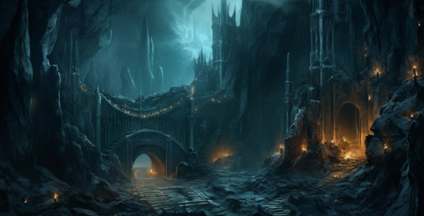

Publicado el: 20 de octubre de 2024 por Gandalf | Categoría: Aventura
Moria, la antigua ciudad enana, es un lugar lleno de historia y misterio. Oculta en las profundidades de las Montañas Nubladas, esta ciudad subterránea fue una vez el hogar de los enanos, hasta que una oscuridad aterradora la reclamó. Hoy, Moria permanece como un sitio lleno de secretos y leyendas, esperando a ser descubierto por valientes aventureros.
Moria, también conocida como Khazad-dûm, fue una de las ciudades más grandiosas de la Tierra Media. En su época de esplendor, fue hogar de los enanos más sabios y poderosos. Sin embargo, la codicia de los enanos por el mithril, un metal precioso, despertó a una oscura fuerza conocida como el Balrog, que destruyó la ciudad y sumió a Moria en las tinieblas.
Llegar a Moria es una tarea desafiante, ya que la ciudad está oculta entre las Montañas Nubladas. Para los más aventureros, el viaje comienza en Rivendel, y desde allí, los viajeros deben atravesar peligrosas montañas y minas abandonadas hasta llegar a las puertas de Moria. Se recomienda tener guías experimentados y estar preparados para enfrentar los peligros del camino.

A pesar de la oscuridad que envuelve Moria, los visitantes valientes pueden realizar algunas actividades interesantes:
Si decides visitar Moria, ten en cuenta estos consejos:
Moria es un destino lleno de misterio y aventura. Aquellos que se atrevan a explorar sus profundidades no solo descubrirán las ruinas de una civilización perdida, sino también las historias y secretos que aún acechan en las sombras. Si eres un aventurero en busca de emoción, no hay mejor lugar que Moria para poner a prueba tu valor.


Bilbo Baggins
"Este artículo me ha traído muchos recuerdos de mis días en Rivendell. Es un lugar que realmente vale la pena visitar. La paz que se respira allí es indescriptible."
Frodo Baggins
"Rivendell fue fundamental para nuestra misión. La sabiduría de Elrond y los demás elfos fue crucial para que pudiéramos completar nuestra tarea. Muy buen artículo sobre este increíble lugar."